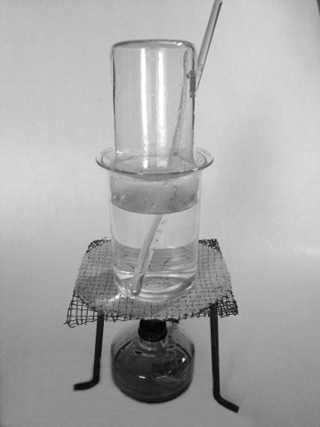
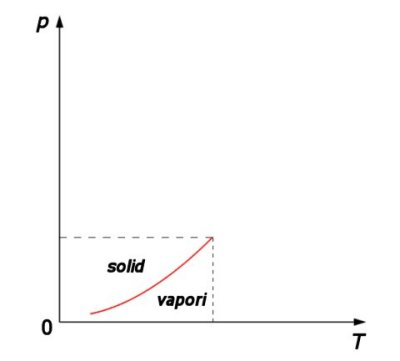
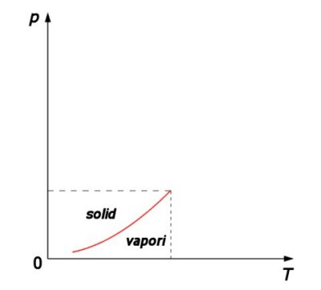
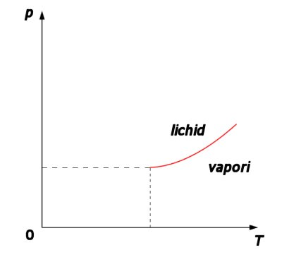
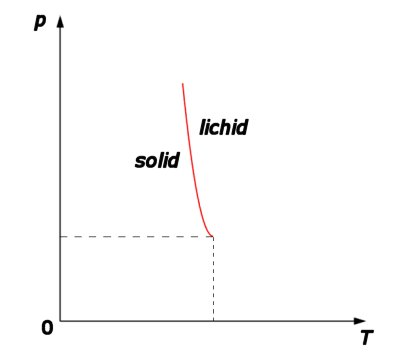
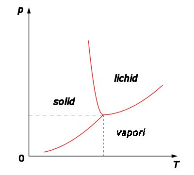
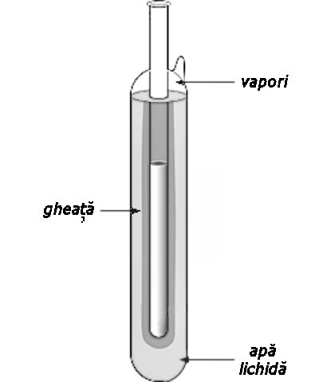

Numim sublimare transformarea unei substanţe din stare solidă
direct în stare de vapori.
Numim sublimare transformarea unei substanţe din stare solidă
direct în stare de vapori.
Elemente de termodinamică. |
Transformări de stare de agregare |
F-6. |
Sublimarea şi desublimarea |
Unele substanţe solide − cum este naftalina − degajă un miros puternic, care se răspândeşte rapid în toată încăperea, semnalând astfel prezenţa vaporilor acelei substanţe, fără ca aceasta să se topească!
Numim sublimare transformarea unei substanţe din stare solidă
direct în stare de vapori.
 Activitatea experimentală 6-1
Activitatea experimentală 6-1
Investighează sublimarea naftalinei. Lucrează în echipă.
Pasul 1. Puneţi naftalină pe o farfurioară. Acoperiţi farfurioara cu un pahar transparent de sticlă.
Pasul 2. Puneţi farfurioara pe un pahar de sticlă termorezistentă, plin cu apaă. Strecuraţi un termometru de laborator în apa din pahar.
Pasul 3. Puneţi paharul la încălzit pe o flacără mică, de la o spirtieră (figura 6−1).

Figura 6-1. Sublimarea naftalinei.
Pasul 4. Urmăriţi ca temperatura apei să nu depăşească 75°C, menţinând astfel naftalina solidă. Observaţi ce se întâmplă în interiorul paharului care acoperă naftalina.
Tot timpul experimentului, temperatura naftalinei a fost menţinută sub cea de topire − nu se formează nici un strop de naftalină lichidă. Cu toate acestea, se formează vapori de naftalină, proveniţi direct din naftalina solidă − naftalina sublimează.
Pentru a se desprinde din solid, o moleculă trebuie să primească suficientă energie: pentru desprinderea moleculei din legăturile stării solide (ca în cazul topirii) şi pentru eliberarea completă a moleculei (ca în cazul vaporizării).
Sublimarea are loc cu absorbţie de căldură (căldura latentă de
sublimare), egală cu suma căldurilor latente de topire şi vaporizare.
Vaporii de naftalină formaţi prin sublimare se depun ca naftalină solidă pe pereţii mai reci ai paharului.
Numim desublimare transformarea unei substanţe din stare de
vapori direct în stare solidă.
La revenirea moleculelor în solid, forţele de atracţie intermoleculare efectuează lucru mecanic − se eliberează energie.
Desublimarea are loc cu eliberare de căldură (căldura latentă de
desublimbare), egală cu cea de sublimare.
 Provocarea 6-1
Provocarea 6-1
Cât te aştepţi să fie căldura specifică de sublimare a gheţii, la presiune normală?
Toate substanţele solide sublimează. În cazul celor cu miros puternic, sublimarea este evidentă la presiune normală şi temperaturi obişnuite. La altele, sublimarea este mai lentă.
Provocarea 6-2
Cum te aştepţi să fie influenţată viteza sublimării de creşterea temperaturii?
Mărind temperatura solidului, agitaţia termică devinde mai intensă. Tot mai multe molecule vor părăsi solidul în fiecare secundă: viteza de sublimare creşte.
La presiunea la care este supus solidul, există o temperatură anume pentru care ritmul în care particulele părăsesc solidul (prin sublimare), devine egal cu ritmul în care particulele se reîntorc în solid (prin desublimare). La această presiune, vaporii sunt în echilibru cu solidul din care au provenit.
Provocarea 6-3
Cum te aştepţi să fie influenţată temperatura la care solidul este în echilibru cu vaporii săi, de creşterea presiunii?
Prin sublimare, vaporii care rezultă au o densitate mult mai mică decât cea a solidului. Creşterea presiunii favorizează evoluţia către volum mai mic − desublimarea. Agitaţia termică trebuie să fie mai intensă pentru a realiza echilibrul la presiune mai mare (figura 6−2).
 

Figura 6-2. Diagrama de echilibru solid−vapori.
Curba din figura 6−2 reprezintă perechile de valori ale presiunii şi temperaturii pentru care solidul şi vaporii săi sunt în echilibru.
Provocarea 6-4
Cum te aştepţi să arate diagrama de echilibru dintre lichid şi vaporii săi?
Vaporii care rezultă prin vaporizarea lichidului au o densitate mult mai mică decât cea a lichidului. Creşterea presiunii favorizează evoluţia către un volum mai mic − condensarea. Agitaţia termică trebuie să fie mai intensă pentru a realiza un echilibru la o presiune crescută. Diagrama este asemănătoare cu cea din figura 6−2, doar deplasată la temperaturi mai mari, la care lichidul poate exista (figura 6−3).

Figura 6-3. Diagrama de echilibru lichid−vapori.
Provocarea 6-5
Cum te aştepţi să arate diagrama de echilibru dintre solid şi lichid pentru o substanţă care se contractă la topire, cum este apa?
Într−un astfel de caz, lichidul care rezultă prin topire este mai dens decât solidul. Creşterea presiunii favorizează evoluţia către un volum mai mic − topirea. Echilibrul se poate realiza la o presiune mai mare (figura 6−4).

Figura 6-4. Diagrama de echilibru solid−lichid, pentru o substanţă care se
contractă la topire (cum este apa).
Provocarea 6-6
Cum te aştepţi să arate suprapunerea celor trei diagrame de echilibru?
Pentru fiecare substanţă, cele trei diagrame au un punct comun, numit punct triplu (figura 6−5).

Figura 6-5. Diagrama de stare a unei substanţe care se contractă la topire
(cum este apa).
În această stare, totate cele trei stări de agregare (solidul, lichidul şi vaporii) coexistă în echilibru!
Pentru fiecare substanţă există o singură pereche de valori
presiune−temperatură la care solidul, lichidul şi vaporii săi pot coexista în echilibru: punctul triplu.
Tabelul 6-1. Caracteristicile punctului triplu pentru câteva substanţe.
| Substanţa | Temperatura punctuluitriplu (K) |
Presiunea punctului triplu (kPa) |
| N2 | 63,18 | 12,53 |
| O2 | 54,36 | 0,152 |
| CO2 | 216,55 | 517,2 |
| H2O | 273,16 | 0,610 |
Temperatura punctului triplu al apei este 0,01°C. Un mic termos, în care s−a pus apă purificată, s−a scos aerul şi s−a sigilat, se stabileşte la parametrii punctului triplu.
Câtă vreme există în termos apă, gheaţă şi vapori, temperatura acestuia este cu siguranţă 0,01°C. Un termometru poate fi etalonat foarte preces introducându−l într−un astfel de termos (figura 6−6).
|  | Figura 6-6. Celulă pentru realizarea condiţiilor punctului triplu al apei. |